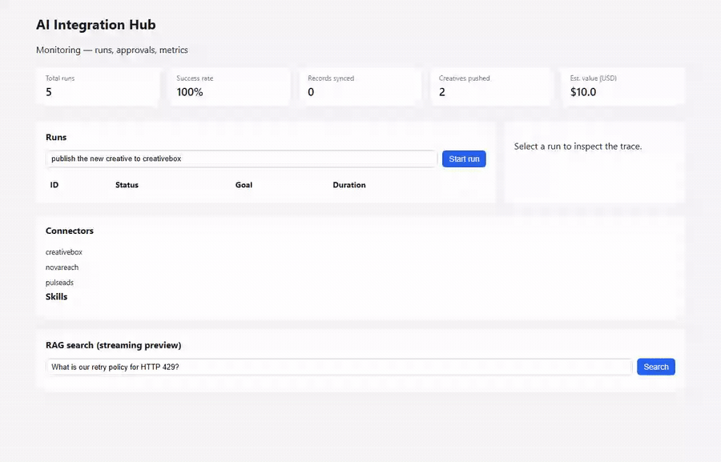

🔌 AI Integration Sandbox
An AI agent you can test in CI — with zero API keys
An offline-first, AI-native integration hub: hybrid RAG, agentic workflows with a human-in-the-loop approval gate, MCP tools, evals, and a React dashboard. Deterministic fakes (FakeLLM, HashEmbedder, mock partner APIs) make the whole thing runnable and testable offline.
